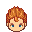
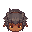
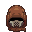

Данный мод меняет повышение опасности окружения, на более реалистичный вариант. Теперь стартовый уровень опасности равен 15, и каждый раз после сна, опасность окружения будет изменятся от -2 до +4. Так-же у вас есть возможность влиять на уровень опасности выполняя задания на истребление монстров.
Вот список заданий и на сколько упадёт опасность окружения:
Ноэр
▸Очистить Кристаллическую Шахту от монстров - 1Крепость Обречённых
▸Охота на Бандитов - 1Пиратская Погибель
▸Пещера Орков - 1Опасность окружения по сути числовое отображение силы монстров, т.е. чем выше значение, тем монстров больше и они сами становятся сильнее. По этому с этим модом люди теперь начнут сопротивляться распространению монстров, и вы можете этому способствовать))
Скачать последнюю версию мода v0.12 (совместимо с версией: B.0.9.4.0.4)
Данный мод добавляет возможность изнасилования Сесилии, Коконы и Лизы, противниками.
Скачать последнюю версию мода v0.3 (совместимо с версией: B.0.9.4.0.4)
Данный мод отключает окончательную смерть у некоторых уникальных NPC (после смерти они просто возродятся в своих привычных местах):
▸АдамСкачать последнюю версию мода v0.4 (совместимо с версией: B.0.9.4.0.4)
Поскольку Comp SkillsFucker Mod и Undead Unique Mod меняют одинаковые файлы, данный пак объединяет эти 2 мода.
Скачать последнюю версию мода v0.4 (совместимо с версией: B.0.9.4.0.4)
Отключает появление состояния растянутых вагины, уретры и анала.
Требует NyxLauncher для работы
Установка: закинуть папку в LonaRPG\ModScripts\_Mods
Скачать последнюю версию мода v0.2 (совместимо с версией: B.0.9.4.0.4)